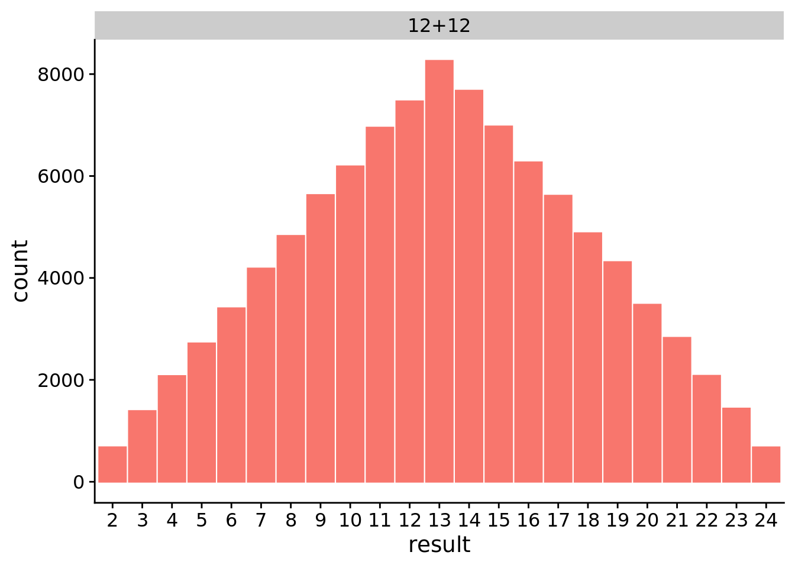

Chapter 2 Rolling Dice
2.1 Dependencies
2.2 Setup
2.3 What values are most common from adding together the results of two twelve-sided dice?
We rolled two twelve-sided dice 100000 times.
ggplot(data=filter(data, die_combo=="12+12"), aes(x=result, color=die_combo, fill=die_combo)) +
geom_histogram(stat="count") +
facet_wrap(~die_combo, ncol=1) +
theme(legend.position="none")